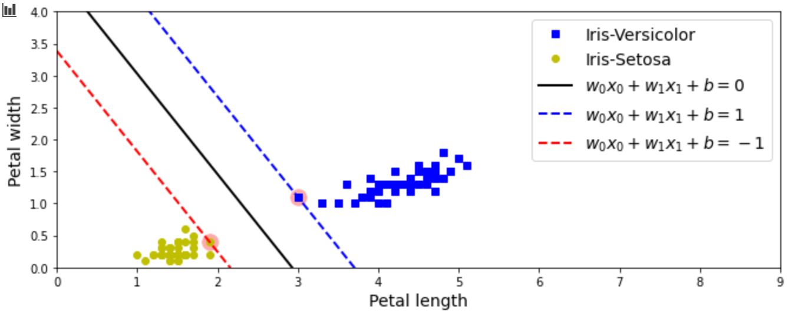
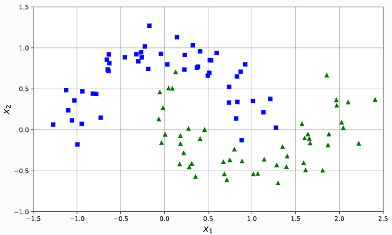
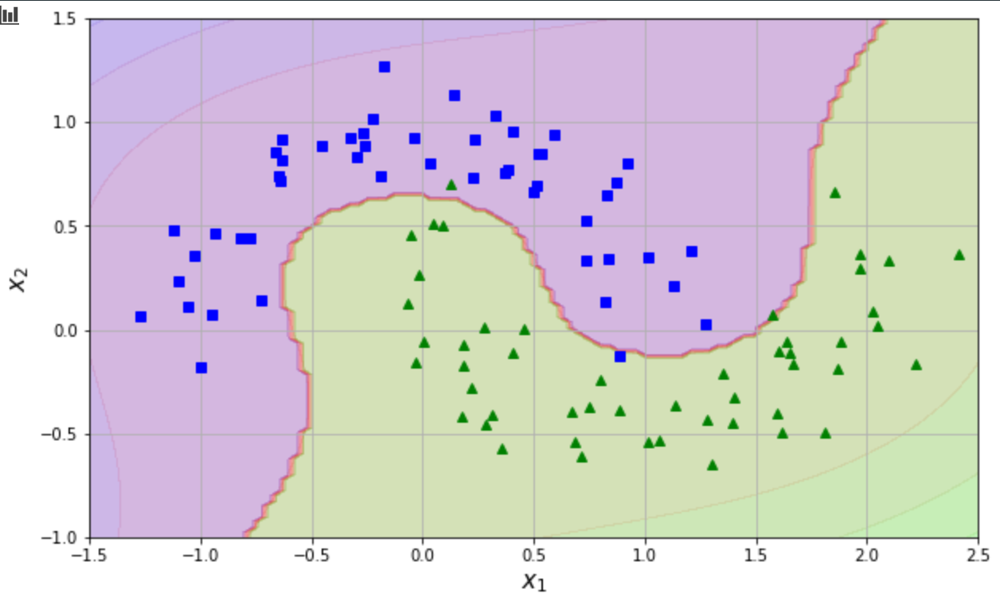
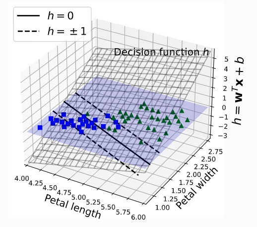

在绘制决策平面的时候我们需要弄懂SVM分类器的决策边界的方程和SVM的实质。
支持向量机的基本思想是拟合类别之间可能的、最宽的“margin”.换言之，它的目的是使决策边界之间的间隔最大化，该决策边界分隔两个类别和训练实例。SVM执行软间隔分类时，实际上是在完美分隔两个类和拥有尽可能最宽的街道之间寻找折中方法（也就是允许少数实例最终还是落在街道上）。还有一个关键点是在训练非线性数据集时，记得使用核函数。
对于一个简单的线性SVM分类器，结果训练实际上最终计算入下面的三个分割线:
以Iris为例，一个简单的二分类的svm的决策边界如下所示:

线性SVM分类器的决策边界绘制
简单的线性SVM分类器的决策边界是一条“直线”(广义的直线), 那么绘制这样的直线就及其简单了，还以上面的Iris二分类为例，使用iris花瓣的长度和宽度来进行分类，训练一个SVM线性分类器:
1 | import numpy as np |
训练完成后，svm_clf.coef_[0]表示上面公式中的W, 而截距b为svm_clf.intercept_, 根据上面的公式可以绘制决策边界:
1 |
|
非线性SVM分类器的决策边界绘制
对于非线性SVM分类器就无法使用简单的直线在绘制决策边界了，以Scikit-Learn中自带的彗星数据为例。
1 |
|

这是一个2次项可以线性分割的数据，但是在原始数据中，无法计算出SVM的决策边界。绘制这样数据的不规则的决策边界的时候，记住一点即可：创建一个meshgrid, 将meshgrid的坐标点代入分类器，会场登高线即可
1 | # 根据预测值和决策分数绘制等高线 |
训练非线性分类器
1 | from sklearn.svm import LinearSVC |
绘制等高线
1 | plt.figure(figsize=(10, 6)) |

在3D坐标系下绘制线性SVM的决策平面
其实和绘制线性SVM分类器的决策边界是一样的，只不过，直线变成了平面
1 | import matplotlib |
1 | from mpl_toolkits.mplot3d import Axes3D |
1 | def plot_3D_decision_function(ax, w, b, x1_lim=[4, 6], x2_lim=[0.8, 2.8]): |
1 | from sklearn.svm import LinearSVC |
1 | fig = plt.figure(figsize=(11, 6)) |
